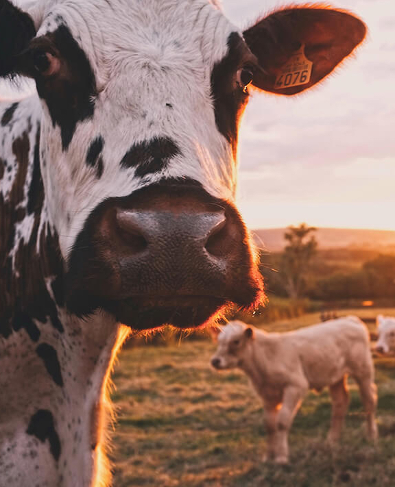
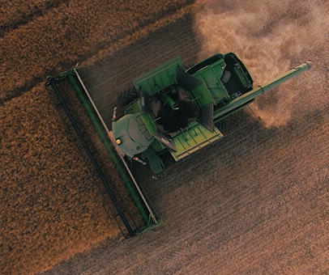

Trends Shaping The Future Of Farming
If you look at them collectively
it's pretty indicative that we are going through a transformative period that's only accelerating.
Technology is having a different effect on ag than it has in the past

